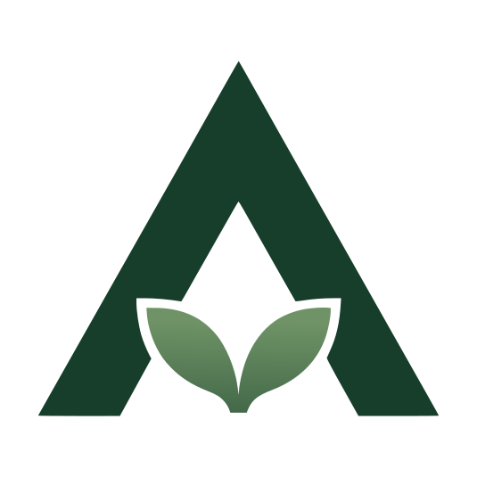

Vegetazione
Vigore e sviluppo della coltura.
Serie storiche, mappe di variabilità e indici satellitari, con qualità dell’immagine e copertura nuvolosa.

ArvoArvo analizza vigore, condizioni meteo e bilancio idrico per evidenziare cambiamenti e anomalie.
Provalo subito: è gratuito, semplice e veloce!
Piano gratuito senza scadenza · Nessuna carta di credito richiesta
Fonti con frequenze e risoluzioni diverse vengono riunite in una cronologia per coltura e stagione.
Immagini Sentinel-2, dati meteo, confini, note e fotografie.
Vigore, variabilità interna, bilancio idrico e rischi meteo vengono letti insieme.
Anomalie e avvisi riportano zona, periodo, origine e qualità del dato.
Vegetazione
Serie storiche, mappe di variabilità e indici satellitari, con qualità dell’immagine e copertura nuvolosa.
Meteo e acqua
Previsioni, evapotraspirazione, bilancio idrico, rischio gelo e caldo per posizione.
Osservazioni
La raccolta funziona offline e si sincronizza automaticamente al ritorno della rete.
Alta risoluzione
Vigore, fallanze e priorità dove la risoluzione del rilievo lo consente.
Arvo non vende dati e non ospita pubblicità.
Valori, fonti e qualità delle analisi sono verificabili.
Leggi l’informativa privacyCrea un account gratuito e configura la tua azienda agricola.
Crea un accountDisponibili prossimamente.